武器
重槍
更新待ち軽槍
蛮族の槍(刺斬 )
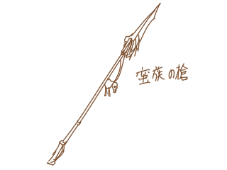 骨を削りだして作りだした。 案外鋭く、斬ることもできる。
魔族の槍(刺斬 )
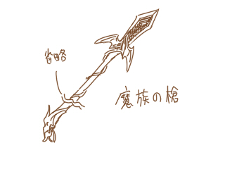 いかにもな装飾。しかし実は魔族のものじゃないです。 「魔族っぽい」槍なんです。
斧
呪骨の鎌( 斬打)
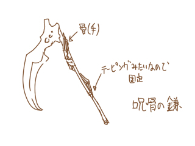 呪いに使われた骨を使った曰くつきの鎌。 敵に錯乱の異常状態を与える。
槌
蛮族の棍棒( 打)
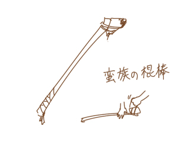 太めの木の枝に石を巻きつけただけの簡素なもの。 しかしダメージはなかなかのものである。
大剣
古紋の大剣( 斬 )
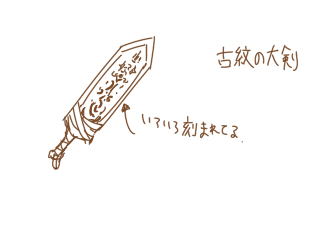 古の紋様が刻まれた大剣。 これには魔法を弾く効果があるとかなんとか。 魔法防御可能になる。
拳
更新待ち剣
木の刀(斬刺打)
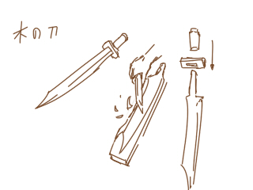 鋭く削った木の刀。 刃こぼれしやすいが全ての物理属性に対応する。
木の棒( 打)
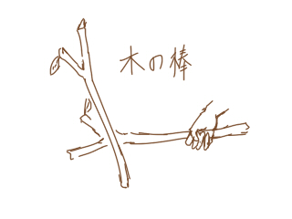 そこらへんに落ちている形の良い木の棒。
石の剣( 打)
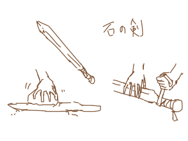 石を削ってできた剣。重く壊れやすく、打撃しかできない。 しかしその一撃は強力。
鉄の剣(刺斬 )
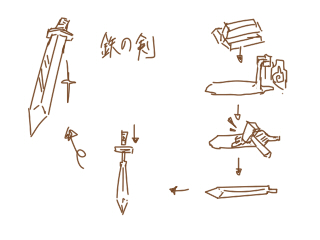 ごく普通の鉄の剣。刺すもよし斬るもよし。
錆びた鉄の剣( 打)
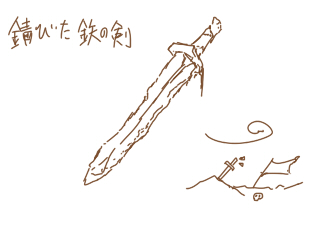 この剣はどんな物語を紡いできたのだろうか。 切ることも突くこともできないので打撃属性となる。
双剣
更新待ち短剣
刃が欠けたナイフ(刺 )
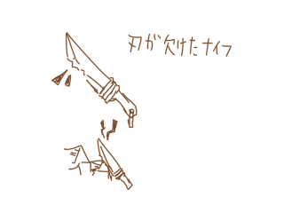 刃が欠けてしまい斬ることができなくなったナイフ。 突くのには十分使えそうだ。
果物ナイフ(刺斬 )
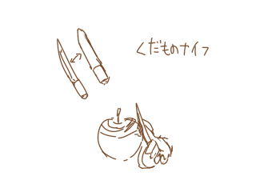 家庭でもよく見かける果物ナイフ。 果物だけでなく使い方次第で肉も斬れる。
異国の短剣(刺斬 )
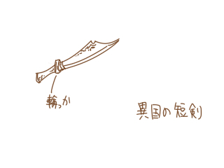 異国の雰囲気を醸し出す短剣。結構きらびやか。
爪
更新待ち投擲
トランプ
トランプ(刃)を飛ばす。 ダメージは特別、魔力依存。 投げるたびにMPを1消費するが微々たるものなので気にする必要はない。鎖鎌
更新待ち刀
更新待ち弓
木の弓
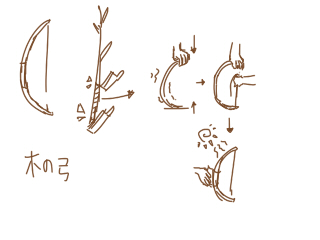 練習用の木の弓。初心者はここから。 作り方は案外簡単で、適した木と糸と布があればすぐ作れる。
弩
更新待ち水晶球
更新待ち法剣
呪術師の短剣(刺 闇)
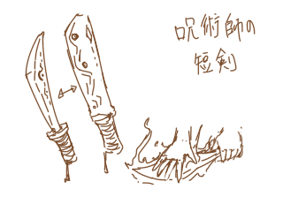 呪術師が儀式に用いる短剣。 法剣ながら属性は闇である。
草花模様の短剣(刺 風)
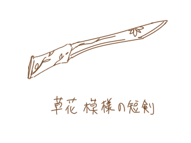 草花の模様が刻まれた短剣。 一見普通の短剣だが、草花師スキルの消費風エレメンタル量を減らすという嬉しい効果付き。
扇
更新待ち杖
更新待ち指輪
更新待ち本
更新待ち分類外武器
朽ちた皮の鞭( 打)
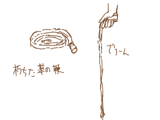 皮が朽ちてしまい思うように振るえない鞭。